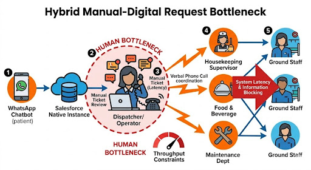
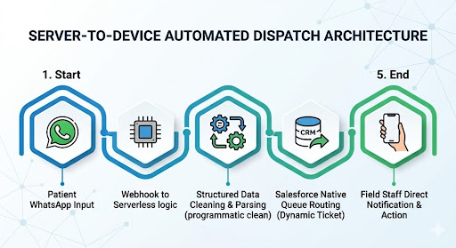
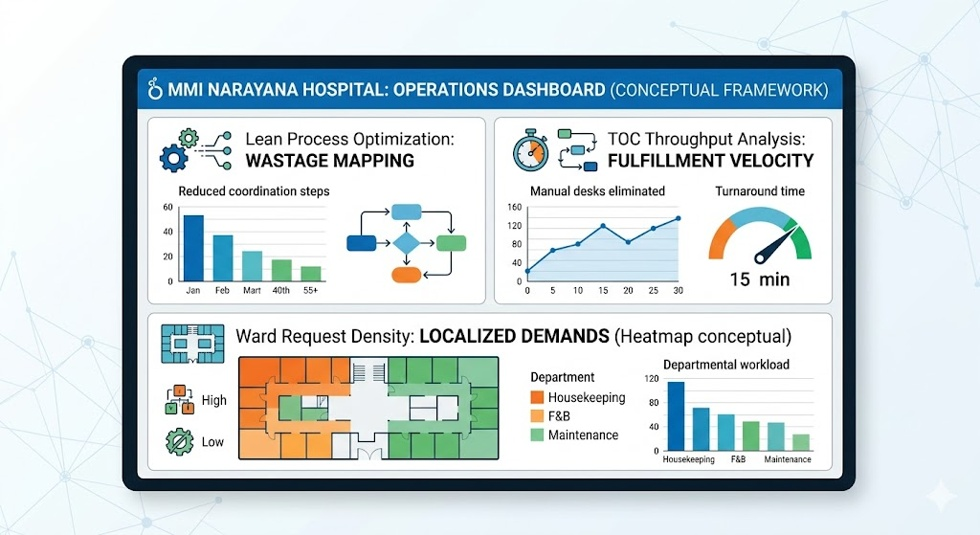
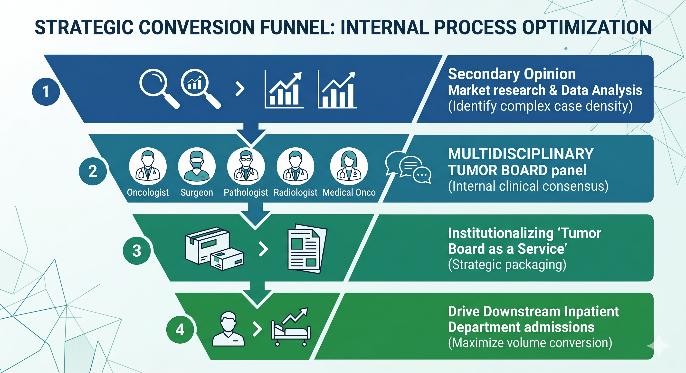

Operational Optimization & Volume Expansion
Final Internship Performance Review
Facility: MMI Narayana Hospital, Raipur
Portfolio A: IP Bot Optimization & Automated Dispatch
Portfolio B: Inpatient Expansion via "Tumor Board as a Service"
Presenter: Jayashree S (MBA-HC)
Portfolio A: IP Bot Optimization & Automated Dispatch
Portfolio B: Inpatient Expansion via "Tumor Board as a Service"
Presenter: Jayashree S (MBA-HC)

Project A: The Inpatient Support Workflow Today
- Manual Steps: Relying on central human intermediaries causes predictable communication delays during operational surges.
- Information Leakage: Vital request parameters (bed designations, ward codes) frequently decay during verbal phone handovers.
- Zero Data Visibility: Off-platform coordination completely hides critical metrics regarding labor capacity and actual turnaround velocities.

Project A: Touchless Automation & Real-Time Monitoring
- 100% Touchless Execution: System completely bypasses the manual desk, dispatching issues programmatically to target field personnel.
- Zero Staff Friction: Deployed entirely within system backend layers, requiring absolutely no on-floor staff retraining or adoption adjustments.
- Live Operations Dashboard: Automated timestamp captures construct a clean, continuous transaction registry without manual entry overhead.
- SLA Drift Isolation: Delivers immediate visibility into outliers, enabling floor managers to dynamically optimize resource deployment.


Project B: Strategic Calibration & Financial Validation
| Funnel Stage | Conversion Target | Monthly Intake Target | Est. Monthly Revenue |
|---|---|---|---|
| Paid Second Opinion | Fractional Capture | 20 Patients | ₹1,00,000 |
| Tertiary Conversions | 10% Downstream Rate | 2 Patients | ₹8,00,000 |
| TOTAL MONTHLY PIPELINE | Targeted Pilot Baseline | 22 Patients | ₹9,00,000 |
The Underutilized Asset Multiplier
The Consensus Board functions as a capital-light intake vehicle. Each single converted inpatient efficiently maximizes existing asset capacity, filling 25–30 LINAC treatment slots and surgical OTs at zero incremental client acquisition cost.

Strategic Institutional Value Delivered
Project A: Operational Efficiency Outcomes
- Transitioned system to a 100% touchless, automated internal request routing network.
- Eliminated manual helpdesk labor constraints and minimized verbal communication leakage.
- Deployed a dynamic business intelligence layer for micro-tracking fulfillment velocities.
Project B: Revenue Pipeline Outcomes
- Productized existing multidisciplinary expertise into an accessible, market-facing offering.
- Constructed a highly structured, frictionless digital intake gateway for high-acuity cases.
- Created a reliable, predictable case-acquisition vehicle to optimize long-term inpatient bed occupancy.
Core Achievement: Unlocked hidden operational capacity and maximized revenue potential by optimizing our existing infrastructure and clinical assets.